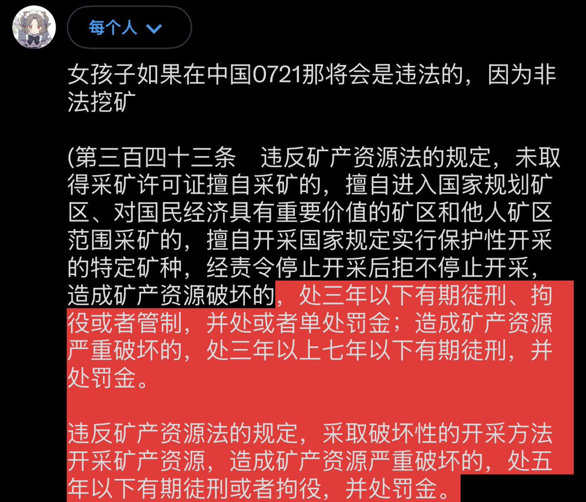

Echo37
@ax09s84751
@45_206MHz 挖的是这个矿吗？

45.206 MHᴢ 🇳🇿
@45_206MHz
女孩子如果在中国0721那将会是违法的，因为非法挖矿
(第三百四十三条 违反矿产资源法的规定，未取得采矿许可证擅自采矿的，擅自进入国家规划矿区、对国民经济具有重要价值的矿区和他人矿区范围采矿的，擅自开采国家规定实行保护性开采的特定矿种，经责令停止开采后拒不停止开采，造成矿产资源破坏的 https://t.co/GhzB5mkZIZ